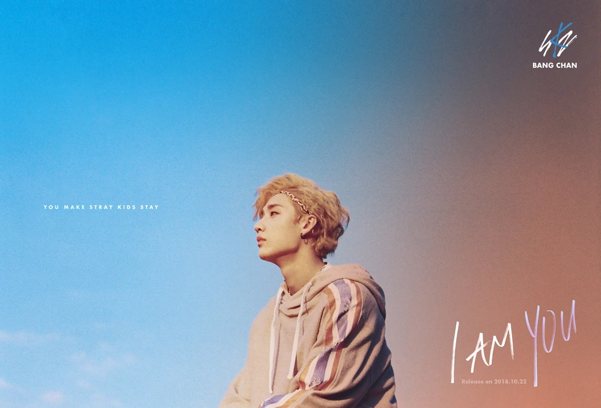

Biografía de Bang Chan
Bang Chan, cuyo nombre real es Christopher Bang, nació el 3 de octubre de 1997 en Seúl, Corea del Sur.
Desde joven, Bang Chan mostró un gran interés por la música y comenzó a entrenar como aprendiz pero en lo que más destaca es en su capacidad para componer canciones. Tiene muchísimas canciones registradas bajo su nombre o bajo 3RACHA que es el grupo formado por la Rap Line de Stray Kids (Banchang, Chanbin y Han)
En 2017, Bang Chan debutó como líder del grupo de K-pop Stray Kids bajo la compañía JYP Entertainment, una de las más reconocidas a nivel mundial siendo la misma discográfica a la que pertenecen grupos como Twice.